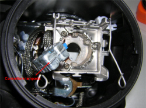
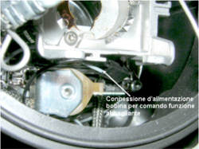

5540BP CHECK THE HEADLAMP HIGH BEAM FUNCTION CONTROL COIL SUPPLY WIRING
- Path
- Test > 55 ELECTRICAL EQUIPMENT > 5540 EXTERIOR LIGHTING > 5540B HEADLAMPS > 5540BP CHECK THE HEADLAMP HIGH BEAM FUNCTION CONTROL COIL SUPPLY WIRING
- Kind
- test / check procedure
- Applies to
- all engines; all production periods
- Interactive page
- https://sloeber94.github.io/elrnDB-fCrm/en/#/194003976
Applies to: all engines; all production periods
STEP | CHECK TO BE PERFORMED | RESOLUTION IF THE CHECK IS NOT OK |
|---|---|---|
1 | Remove the headlamp Remove the headlamp bulb Op. 5540B47 BULB FOR MAIN BEAM ONE LH OR RH OF ONE GS DISCHARGE LIGHT CLUSTER RR WITH LIGHT CLUSTER REMOVED Check that the 3-way connection (with two wires) supplying the headlamp high beam control coil is correctly inserted | Connect the electrical connection |
2 | Check the headlamp high beam function is operating correctly. The test can be considered over | Replace the left or right headlamp (the faulty one) and Op. 5540B81 LEFT GAS DISCHARGE LIGHT CLUSTER - R.R. Op. 5540B82 RIGHT GAS DISCHARGE LIGHT CLUSTER - R.R. and move on to Step 3 |
3 | Check the headlamp high beam function is operating correctly. | Refit the headlamp replaced previously and replace the control unit Op. 5540B42 CONTROL UNIT OF ONE GAS DISCHARGE LIGHT CLUSTER R R |


Topics linked from this page (4)
- 5540B42 CONTROL UNIT OF ONE GAS DISCHARGE LIGHT CLUSTER R R
- 5540B81 LEFT GAS DISCHARGE LIGHT CLUSTER - R.R.
- 5540B82 RIGHT GAS DISCHARGE LIGHT CLUSTER - R.R.
- E2012 MAIN BEAM HEADLAMPS